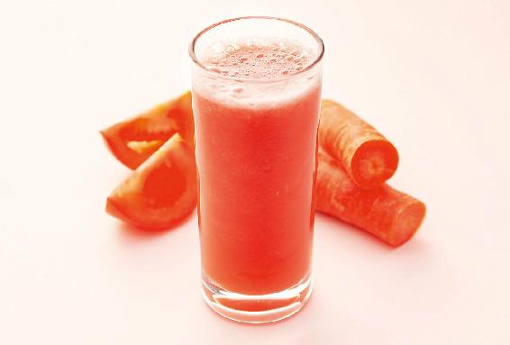
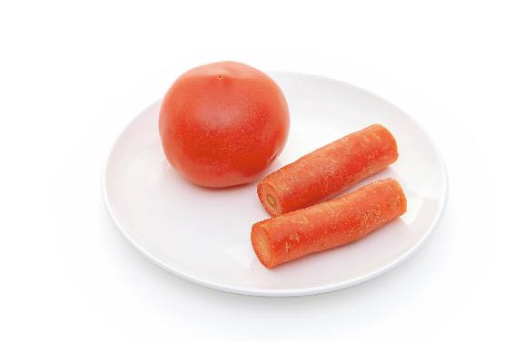
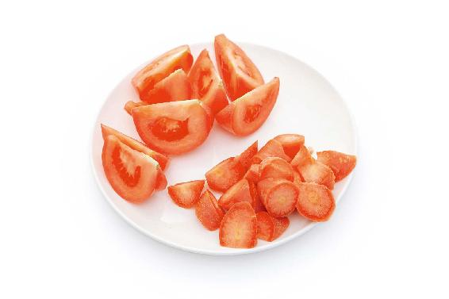
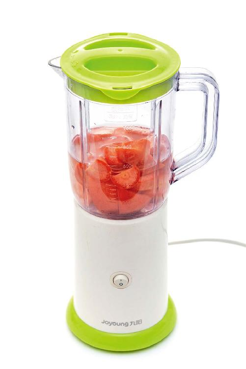

夏天的阳光最强烈，阳气也最足，这种气候现象，对我们的身体既有好处，也有坏处。
好处是什么呢？它会促进皮肤合成维生素D，促进身体吸收钙。在夏天的三个月，我们身体所接受的阳光足够皮肤合成一年所需要的维生素D。
夏天晒太阳，最好是在早上十点之前和下午三点之后。
很多女孩子在夏天都怕晒黑，实际上，黑色素的产生是为了保护皮肤的，它是可以随时间慢慢代谢掉的。
其实，我们最应该担心的不是夏天皮肤被晒黑，而是烈日照射身体所产生的光毒。
很多朋友都没有意识到光是带毒的。西方人受光毒之害比较明显，因为他们喜欢到海边去暴晒，特别是生活在高纬度地区的人。他们生活的地方冬天都很漫长，一年中见到的阳光并不多，所以就特别喜欢在夏天的时候到海边去暴晒。这会造成一个后果——到了老年之后，皮肤癌的发病率比较高。
光毒对皮肤有两大伤害：第一，促进皮肤癌变；第二，使皮肤老化。
阳光照射所产生的光毒会破坏人体皮肤的结缔组织，导致皮肤的胶原蛋白流失。这样一来，皮肤的结缔组织就没法再维持皮肤原有的牢度，皮肤就会逐渐变得松弛，出现皱纹，这是光毒长期积累后给皮肤带来的危害。
光毒还可以给人带来“立竿见影”的危害，比如晒伤。有的朋友在夏天外出旅游，不注意防晒，一两天下来后，皮肤就会变得红肿、疼痛、脱皮。还有一种光敏反应，有的朋友在晒过太阳之后，皮肤就会过敏，起红疹。
过敏体质的朋友，在夏天一定要特别注意防晒，可采用物理防晒的方法，比如，戴遮阳的帽子、口罩和眼镜。
如果是涂防晒剂，最好用物理防晒剂，不要用含有化学成分的化学防晒剂。因为化学防晒剂虽然也能防止皮肤晒伤，但它也更容易刺激皮肤，产生光敏反应。即使是儿童防晒产品，也可能产生这种现象。
因为生产商最早设计的目的是为了防止儿童娇嫩的皮肤被晒伤，但没有想到这些化学的防晒剂反而刺激了儿童的皮肤，使得一些儿童产生了严重的光敏反应——整个脸红肿，眼睛肿得只剩一条缝。
如果家长发现孩子在晒太阳之后出现了这样的情况，就要考虑是不是产生了光敏反应。
普通人如何来避免光敏反应呢？
有一点很重要，最好不要吃那些能促使身体产生光敏反应的食物。
哪些食物能使身体产生光敏反应呢？
我们日常吃的芹菜、香菜，还有常吃的一些野菜，特别是灰灰菜，都容易使人产生光敏反应。
灰灰菜南方北方都有，是一种碱性的野菜，经常吃可以降脂、减肥，但在吃完之后，最好不要出门晒太阳，否则很容易使身体产生光敏反应。
有些朋友可能当时没有什么反应，但是在夏天过完之后，脸上容易长晒斑。
建议大家在吃了容易产生光敏反应的食物后，要注意有效地遮挡阳光。
有些朋友，很喜欢自制各种敷脸面膜，而且喜欢用天然的果蔬来自制，把果蔬打成汁敷在脸上，甚至直接切成片敷在脸上。
这么做要特别小心，因为蔬菜和水果中含有大量的各种有机酸，虽然可能使脸上的皮肤看起来变好，但敷过之后，皮肤会变得脆弱。而且皮肤涂上了这些可能含有光敏物质的东西之后，再出门晒太阳，就非常容易引起身体的光敏反应。所以当您使用果蔬自制的面膜之后，最好不要出门晒太阳。
其实果蔬护肤，吃下去更有用。在夏天的时候，有一道可以抗光毒的食方——胡萝卜番茄汁。番茄，也就是西红柿，它和胡萝卜都是能帮助身体抗光毒的食物。您可以把它们榨成汁，每天出门之前喝一杯，回家再喝一杯。


原料：胡萝卜、番茄。

做法：把西红柿和胡萝卜切成块儿，一起放到榨汁机里榨成汁。

允斌叮嘱：
可以适当地加一点蜂蜜来调味，味道会更好，而且蜂蜜有清风热的作用。放洋槐花蜜的效果是最佳的。
允斌解惑：榨胡萝卜番茄汁，可以加凉白开
郭：第一次榨胡萝卜番茄汁，果汁有点稠，可以加点纯净水或者凉白开一起榨汁吗？
允斌：可以的。